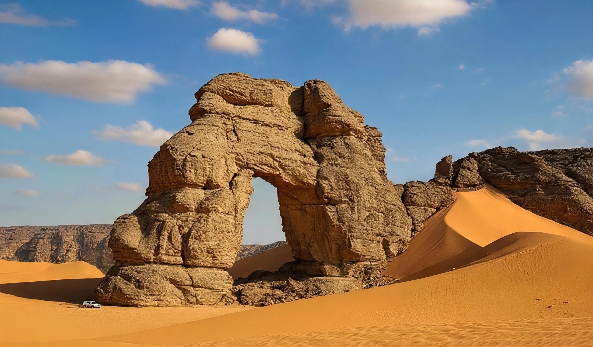
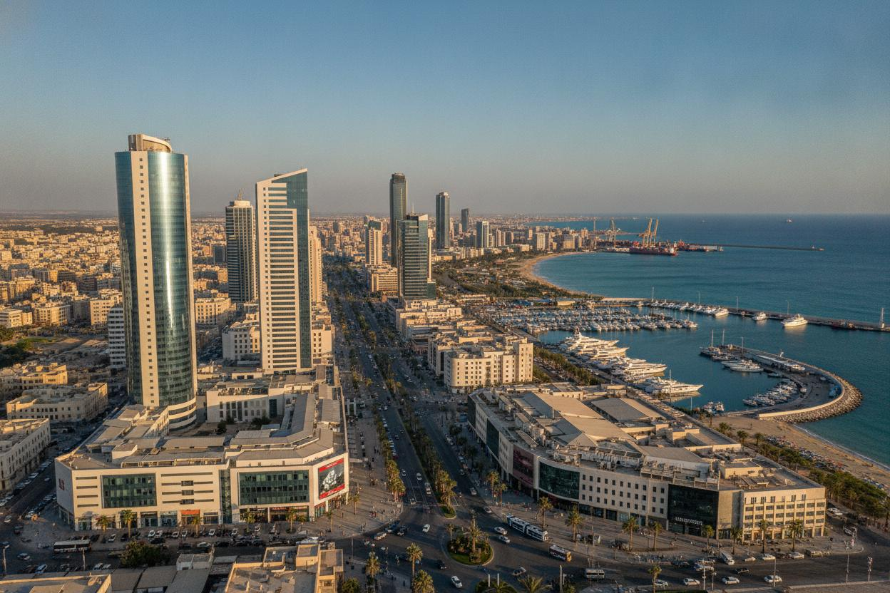

أشهر المدن الليبية
أشهر المدن الليبية
تعرف على أبرز المدن الليبية وما تقدمه من معالم سياحية وثقافية فريدة
 اقرأ المزيد
اقرأ المزيد
طرابلس
عاصمة ليبيا وأكبر مدنها، تجمع بين التاريخ العريق والحضارة الحديثة. تضم المدينة القديمة وأسواقها التقليدية.
 اقرأ المزيد
اقرأ المزيد
بنغازي
ثاني أكبر مدن ليبيا، مدينة الساحل الشرقي الجميلة بكورنيشها الخلاب وشواطئها الرائعة.
 UNESCO
UNESCO
غدامس
لؤلؤة الصحراء، مدينة الواحات القديمة المسجلة في اليونسكو، تُعرف بعمارتها التقليدية الفريدة.

اقرأ المزيدسبها
عاصمة الجنوب الليبي وبوابة الصحراء الكبرى، تتميز بقربها من الكثبان الرملية والواحات.
 اقرأ المزيد
اقرأ المزيد
البيضاء
تقع في الجبل الأخضر، تتميز بمناخها المعتدل وطبيعتها الخلابة وآثار قورينا التاريخية.

اقرأ المزيدمصراتة
إحدى أهم المدن الليبية، مركز تجاري حيوي على الساحل الغربي بشواطئها الجميلة ونمط حياة عصري.